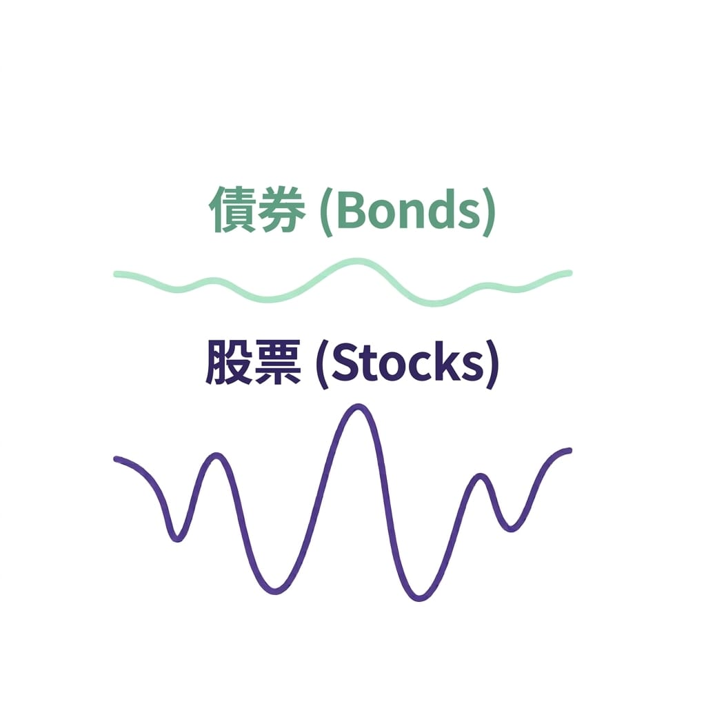

談完了股票和 ETF，進階篇這一篇要講一個常被新手忽略的工具——債券。
很多人一聽到債券，覺得「那是有錢人在玩的」「感覺很無聊」。但其實債券在投資組合裡扮演一個非常重要的角色：它是你的穩定器。這篇就來講債券是什麼、怎麼賺、有哪些類型，以及為什麼你的組合裡應該有它。
債券是什麼？一張「借據」
買債券，本質就是把錢借給政府或企業。對方定期付你利息（稱為「票面利率」或「coupon」），到期後還你本金。它就像一張白紙黑字寫清楚的借據：「我向你借 XX 元，每年付你 XX% 的利息，N 年後還清。」
- 政府債券：借錢給國家政府。違約風險最低，但利率也相對低。
- 公司債券：借錢給企業。利率比政府債高，但企業有可能還不出來（違約風險較高）。
- 投資等級債：信用評等好的企業發行，比較安全。
- 高收益債（垃圾債）：信用評等差的企業，利率高但風險也高，名字聽起來很吸引人，但要小心。
債券怎麼賺錢
債券的獲利來自兩個地方：
- 利息收入：最主要的來源。每期收到的票息，穩定、可預期。
- 價差：債券本身也可以在市場上買賣，價格會變動。如果你在市場上以低於面值的價格買到，到期拿回面值，差額就是你的獲利。
但債券的價格有個特性很多人不知道：利率和債券價格是反向的。利率上升，債券價格下跌；利率下降，債券價格上漲。這點在後面學習財務面時還會再碰到。
為什麼投資組合需要債券
這才是重點。債券單獨拿出來看，報酬確實不高。但它真正的價值，在於它跟股票的互補關係：

當股市大跌時，資金往往流向債券（避險需求），債券價格反而上漲或相對穩定。這種「股跌債穩」的特性，讓債券成為平衡組合波動的好工具。
舉個實際感受：假設你的組合全是股票，遇到股市崩跌 30%，你會看著帳面大幅縮水，可能在恐懼下做出錯誤決定（在低點賣掉）。但如果組合裡有 20~30% 的債券，債券部位在這時撐住你，整體跌幅可能只有 15~20%，心理壓力小很多，更容易撐過去。
債券不是讓你「賺更多」的，而是讓你「跌更少、撐得住」的。能夠撐過市場低潮不亂賣，長期下來反而是更好的結果。
新手怎麼接觸債券
不一定要直接買單張債券（門檻高、選擇複雜），幾個更簡單的方式：
- 債券型 ETF：跟買股票 ETF 一樣簡單，直接在股票帳戶買，一次持有一籃子債券。費用低、分散好，是新手最容易入手的方式。
- 債券基金：交給基金經理人操作，門檻通常比單張債券低。
對多數上班族投資人來說，債券型 ETF 是最省事的選擇。
我的組合需要多少債券？
沒有標準答案，但有一個粗略的參考：
- 年輕、投資期長、承受波動能力強：股票比重高（80~100%），債券少甚至不需要。
- 接近退休、需要穩定資金：債券比重提高（30~50% 甚至更多）。
- 中間地帶（多數人）：常見的起點是 70~80% 股票型 + 20~30% 債券型，再依自己的狀況調整。
重點是：先認識它的角色（穩定器），再決定要不要放、放多少。
小結
- 債券 = 把錢借給政府或企業，收利息、到期拿回本金。
- 最大價值在於跟股票的互補性：股市波動大時，債券穩住你的組合。
- 新手最簡單的入手方式：債券型 ETF。
- 比重依你的年齡、風險承受度、投資期長短調整。
下一篇，我們要進入比較特別的一類——槓桿工具（權證與期貨），重點會放在「它們是什麼、風險在哪、什麼人適合」，這也是整個進階篇裡最需要謹慎的一篇。
系列導覽
- 📚 回到 投資理財修煉 全系列目錄
- ⬅️ 上一篇：ETF 深入：怎麼挑、怎麼配
- ➡️ 下一篇：槓桿工具：權證與期貨的風險與機會
本文為個人學習記錄與知識整理，非投資建議。投資有風險，請依自身情況獨立判斷 🐾